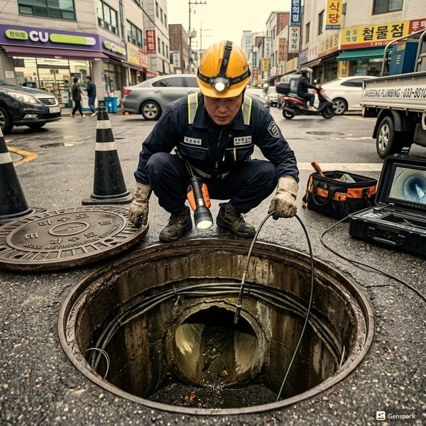
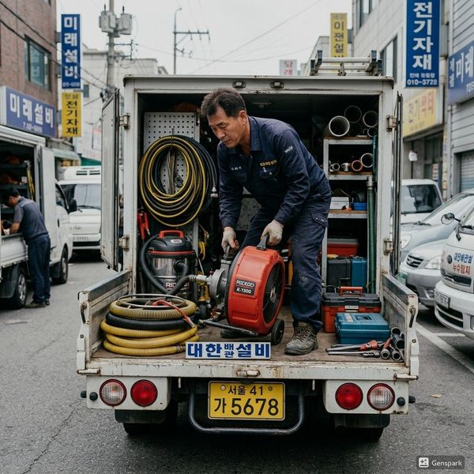

제우스시설관리 | 2025년 4월

변기막힘으로 출동하는 현장의 약 60%가 물티슈가 원인입니다. '수세식 가능'이라고 표시된 물티슈조차 실제 배관에서는 거의 분해되지 않습니다.
화장지는 물에 닿으면 30초 내에 풀어지도록 설계되어 있습니다. 반면 물티슈는 젖은 상태에서도 강도를 유지하기 위해 합성 섬유가 포함되어 있어, 배관 안에서도 형태를 유지합니다. 이것이 변기 트랩의 S자 굴곡부에 걸려 다른 이물질까지 끌어모으면서 완전한 막힘으로 이어집니다.
❌ 물티슈 - '수세식 가능' 표시여도 배관에서 분해되지 않음
❌ 생리대/팬티라이너 - 흡수체가 물을 흡수하여 부피가 커짐
❌ 면봉/치실 - 배관 접합부에 걸려 이물질 축적 유발
❌ 고양이 모래 - 물에 만나면 응고되어 단단한 덩어리로 변함
❌ 음식물 - 기름기가 배관에 축적, 변기는 음식물 처리용이 아님
❌ 약품/담배꽁초 - 배관 부식 및 하수 오염 유발
1단계: 물 내리기를 멈추세요. 이미 수위가 높다면 추가로 물을 내리면 넘칩니다.
2단계: 30분~1시간 기다려 보세요. 화장지가 원인이라면 자연적으로 풀어질 수 있습니다.
3단계: 뜨거운 물(끓지 않는 정도)을 높은 곳에서 부어 수압으로 밀어냅니다.
4단계: 위 방법이 안 되면 전문가를 부르세요. 무리한 시도는 변기 파손이나 배관 손상으로 이어집니다.
